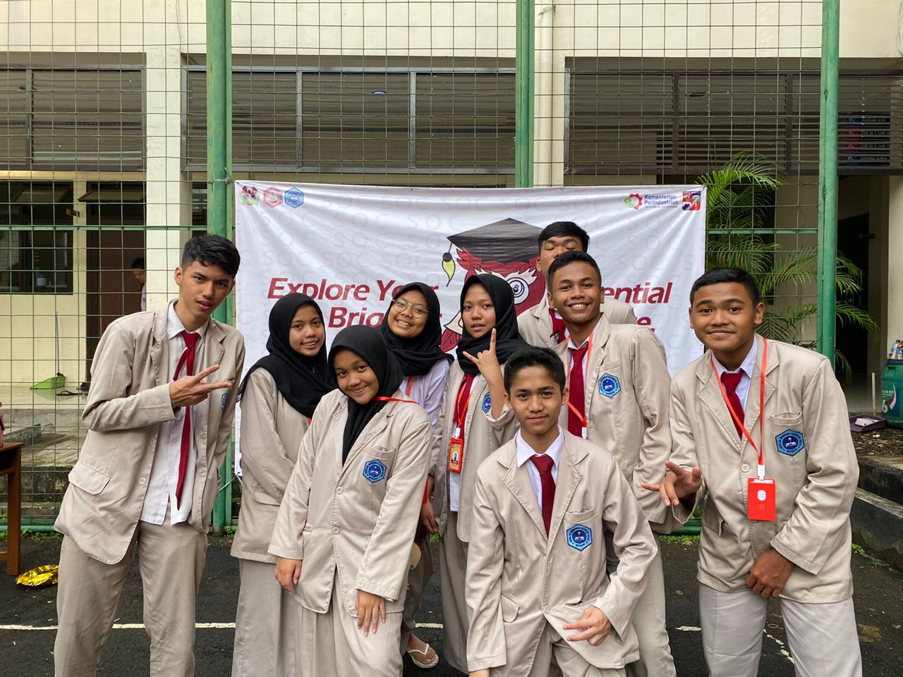
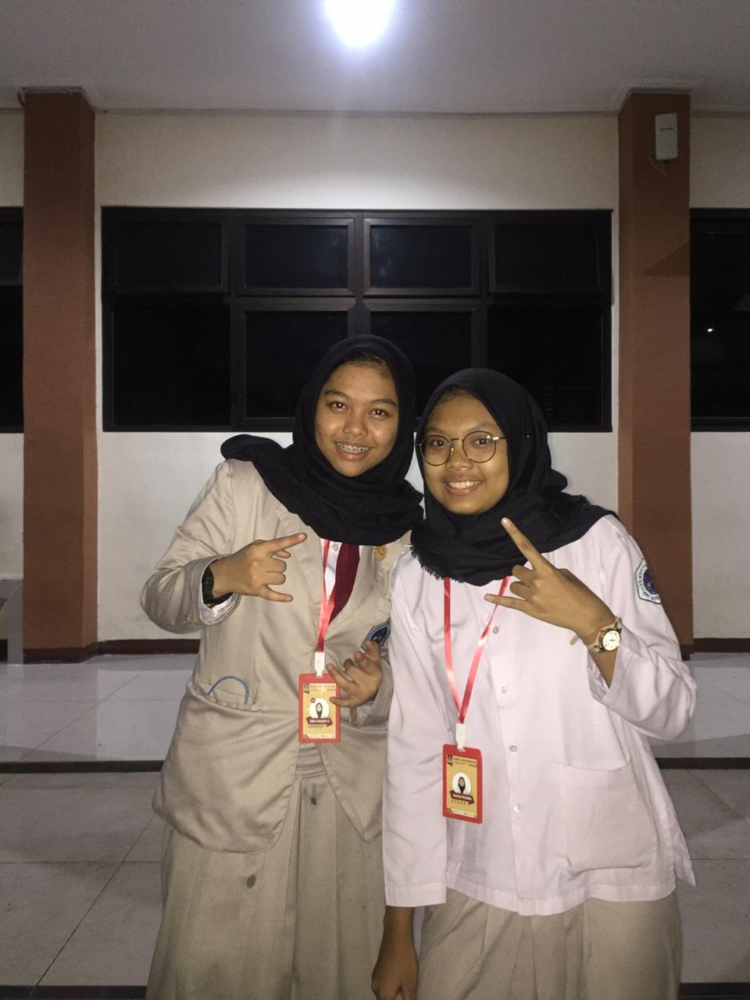

BIODATAKU
Data Pribadi
Nama : Haniifah Zhulaikha
Nama Panggilan : Hanii
Tempat Tanggal Lahir: Bogor, 1 Agustus 2003
Jenis Kelamin : Perempuan
Agama : Islam
Alamat : Asrama Kopasgat Sukasari Lawanggintung Rt 04/04 No. 08
No. Telp : 089506275303
Email : haniifahzhulaikha@gmail.com
Hobi : membaca, bernyanyi, menulis

Riwayat Pendidikan
- 2007-2009 : TPA Nurul Huda
- 2009-2015 : SDN Lawanggintung 2
- 2015-2018 : SMPN 18 Bogor
- 2018-sekarang : SMK-SMAK Bogor
Favorit (Kesukaan)
- Makanan : Seafood
- Minuman : Lemon Tea
- Film : Harry Potter Series
- Penyanyi: Tulus
- Penulis : Boy Candra
- Buku : Salad Days
- Olahraga: Bola Voli